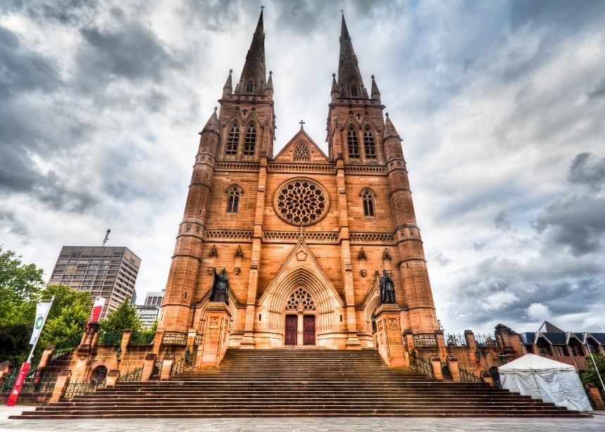

Си́дне́й (англ. Sydney, произносится [ˈsɪdni]— самый большой и самый старый город Австралии площадью 12 144,6 км², население которого по состоянию на июнь 2017 года составляло 5 131 326 человек. Сидней является столицей штата Новый Южный Уэльс. Город был основан в 1788 году Артуром Филлипом, который прибыл сюда во главе Первого флота, и являлся местом первого колониального европейского поселения в Австралии. Город был назван колонистами в честь лорда Сиднея — бывшего на тот момент министром колоний Великобритании.
|
Сиднейская опера – одно из наиболее грандиозных чудес архитектуры прошлого века: это не просто здание, но и произведение искусства. Однако сразу после окончания строительства у театра насчитывалось не меньше критиков, чем почитателей. Лондонская “Таймс” отозвалась о театре как о “здании века”, однако можно было найти и такие характеристики, как, скажем, “француженки-монахини, играющие в футбол”. Сами жители Сиднея с любовью называют свое чудо света “монашками, дерущимися за мяч(регби)” или “раковинами устриц”.
|
|
|
Сиднейская башня (AMP Tower или Centrepoint Tower) – самое высокое здание в Сиднее и второе в Австралии. Ее высота составляет 309 метров или 1001 фут. Австралийцы называют башню “иглой, пронзающей небеса”.Телебашня также является второй по высоте смотровой башней во всем Южном полушарии, уступая Скай Тауэр в Окленде, Новой Зеландии. Зато смотровая площадка Сиднейской телебашни находится на 50 м выше, чем у Скай Тауэр, что позволяет с высоты птичьего полета любоваться панорамой огромного города с многочисленными небоскребами, Голубыми Горами, ослепительным океаном и Сиднейской бухтой с ее кораблями.
|
|
|
Харбор-Бридж — самый большой мост Сиднея, один из самых больших стальных арочных мостов в мире. Он является одной из главных достопримечательностей Сиднея. Австралийцы в шутку называют мост “вешалкой” из-за его необычной формы.
|
|
|
Сиднейский Аквариум — одна из главных достопримечательностей Австралии, расположенная в гавани Дарлинг. Ежегодно его посещают около 1 млн. человек в год, больше половины которых – гости из-за рубежа. Аквариум был открыт в Сиднее в 1988 году к торжествам 200-летия Австралии и является одним из крупнейших аквариумов мира. Впечатления, полученные от экскурсии в это уникальное сооружение, запоминаются надолго: только здесь можно за несколько часов познакомиться практически со всеми представителями австралийской фауны и флоры, обитающими в прибрежных водах и пресноводных водоемах континента.
|
|
|
Собор Пресвятой Девы Марии — католический собор, расположенный в городе Сидней. Это один из пяти австралийских соборов, носящих почётный статус «малой базилики», признанный «национальной святыней». Самая вместительная (хотя и не самая высокая) церковь Австралии. В 2008 году собор стал центром мероприятий Всемирного дня католической молодёжи и посещался папой Бенедиктом XVI.
|

|
Гимн города
Текст гимна города: к сожалению, у Сиднея нет собственного гимна, поэтому насладимся гимном Австралии
Australians all let us rejoice,
For we are one and free;
We’ve golden soil and wealth for toil,
Our home is girt by sea;
Our land abounds in Nature’s gifts
Of beauty rich and rare;
In history’s page, let every stage
Advance Australia fair!
In joyful strains then let us sing,
«Advance Australia fair!»
Beneath our radiant southern Cross,
We’ll toil with hearts and hands;
To make this Commonwealth of ours
Renowned of all the lands;
For those who’ve come across the seas
We’ve boundless plains to share;
With courage let us all combine
To advance Australia fair.
In joyful strains then let us sing
«Advance Australia fair!»
Ссылки на музыкальные и видеоклипы, связанные с городом: